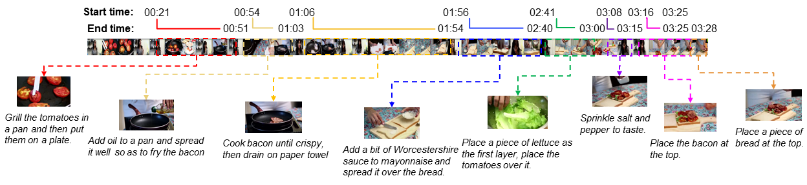
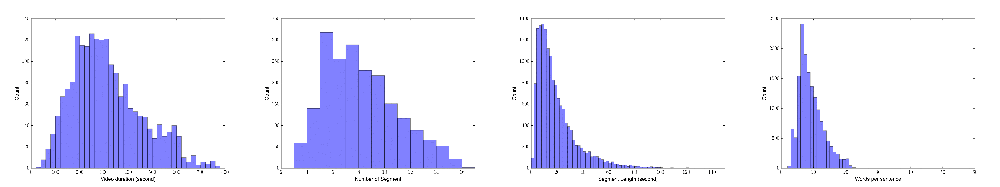
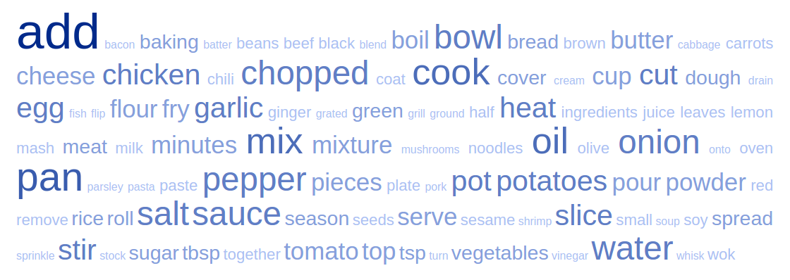

|
|
Home Explore Download Leaderboard |
|
|
Home Explore Download Leaderboard |
Overview
YouCook2 is one of the largest task-oriented, instructional video dataset in the vision community. It contains 2000 long untrimmed videos from 89 cooking recipes; on average, each distinct recipe has 22 videos. The procedure steps for each video are annotated with temporal boundaries and described by imperative English sentences (see the example below). The videos were downloaded from YouTube and are all in the third-person viewpoint. All the videos are unconstrained and can be performed by individual persons at their houses with unfixed cameras. YouCook2 contains rich recipe types and various cooking styles from all over the world. Explore the dataset or read more details.

YouCook2 is currently suitable for video-language research, weakly-supervised activity and object recognition in video, common object and action discovery across videos and procedure learning. (New!) We released the dense bounding box annotation for objects in the recipe text. You can read more here or download. |
Statistics
The total video time is 176 hours with an average length of 5.26 mins for each video. Each video captured is within 10 mins and is recorded by camera devices but not slideshows. All the videos and precomputed feature can be downloaded in the Download page.

Each video contains some number of procedure steps to fulfill a recipe. All the procedure segments are temporal localized in the video with starting time and ending time. The distributions of 1) video duration, 2) number of recipe steps per video, 3) recipe segment duration and 4) number of words per sentence are shown below.
YouCook2 also provides the language description for each procedure step. The total vocabulary appeared in the recipe corpus is over 2600 and the top 100 frequent actions/objects are shown in the following keyword cloud.

|
People |
Acknowledgement
|